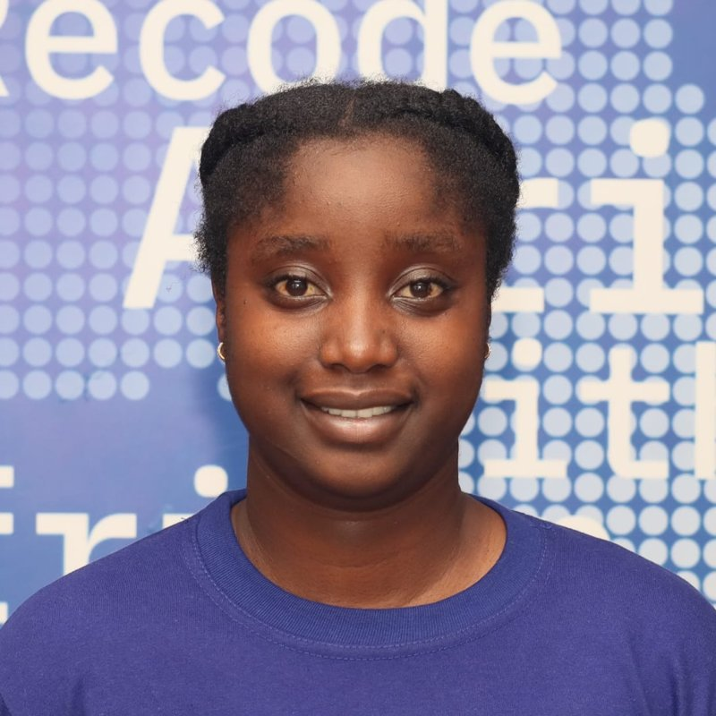

Full-stack developer building production applications with Next.js, TypeScript, Go and Python. Apprentice at Zone01 Kisumu.
Download resumeI build and deploy full-stack applications with PostgreSQL and Supabase backends, REST APIs, JWT authentication and role-based access control, and I integrate Claude and OpenAI APIs into product features. I joined Zone01 Kisumu, a peer-to-peer coding program, in January 2026. I hold a BSc in Information Technology from Dedan Kimathi University of Science and Technology (December 2024).
Languages: TypeScript, JavaScript, Go, Python, SQL, Bash
Frameworks: Next.js, React, FastAPI, Gin, Tailwind CSS, GORM
Tools: Git, GitHub Actions, Vercel, Docker, Linux, REST APIs, Webhooks, CI/CD, OAuth 2.0
Certifications: AWS Cloud 101, AI and ML Fundamentals (Africa Agility), IBM Granite and Cloud Computing (IBM SkillsBuild). Verify on Credly.
Loading projects from GitHub...
Loading articles from dev.to...
My one-page resume covers my experience, projects, skills and certifications.
Download resume (PDF)I follow Bitcoin and the Lightning Network and enjoy learning how they work under the hood. I also write technical articles, which helps me understand what I build.
Email: odalojanetvicky@gmail.com
Phone: +254 794 292 065